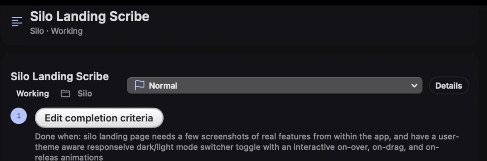
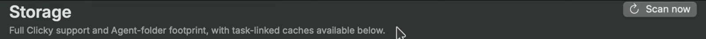

01
Define Done
Write what success means for each task. Cruise keeps your goal beside the latest HeyClicky report, so progress has a yardstick.
Your goal→Latest report→Your call
A simple workflow diagram · not app footage
Your HeyClicky sidekick
Cruise Control is a Mac dashboard for HeyClicky: set a finish line per task, compare it with the latest report, and choose how drive prompts are handled.
Three ways to handle a drive prompt
Cruise mode removes the human checkpoint for drive prompts. VS Code approvals are separate opt-ins.

A little more clarity
HeyClicky does the work. Cruise gives you a clear place to set goals, steer prompts, and see local storage.
Write what success means for each task. Cruise keeps your goal beside the latest HeyClicky report, so progress has a yardstick.
Pick the policy that fits the moment. Change it when you want; Manual is the place to start.
Inspect Clicky support, caches, and workspaces by size, age, and known task link. The inventory is read-only—no files moved or deleted.

Cruise Control · macOS 14+
Unsigned and not notarized; macOS may show a warning.
This page follows GitHub’s latest release. Some current-source features may not be in every installer; Auto-bump delivery is unverified for v1.1.1.